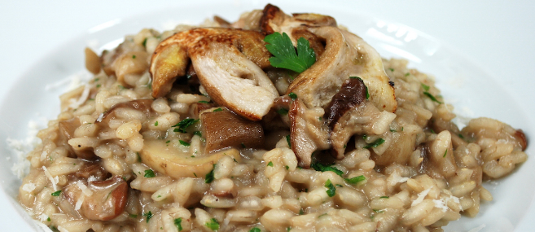

Home
Chanterelle Risotto

Description
Chanterelle Risotto is a really good vegetarian option that is easy to cook when hosting dinner for friends and family.
Ingredients
-
4 tablespoons of butter
-
2 cloves of chopped garlic
-
2 cups sliced chanterelle mushrooms
-
2 cups Arborio rice
-
5 cups vegetable broth
-
2 cups grated Parmesan cheese
-
salt and pepper to taste
Steps
-
Melt two talesppons of butter in a large skillet over medium-high heat.
Cook and stir garlic and mushrooms in the melted butter until slightly browned, set aside.
-
Melt two table spoons of butter in a large saucepan on medium heat. Stir in rice and let cook for 1-2 min.
Slowly add vegetable broth little by litte while stirring continually. Let the liquid abrorb fully
before adding more. Cook until rice is tender.
-
Add the mushroom mixture and let cook until heated. Stir in Parmesan cheese, season with salt and pepper.